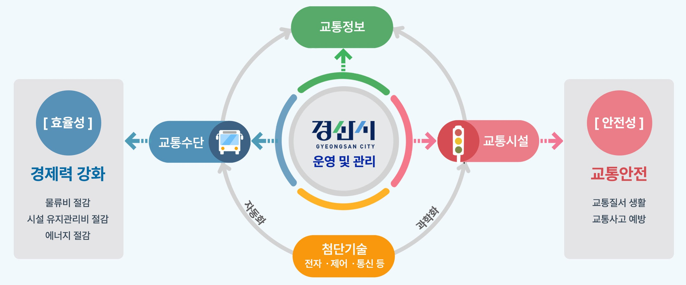

ITS 안내
ITS(Intelligent Transport Systems)란?
지능형교통체계(ITS, Intelligent Transport System)라 함은 교통수단 교통시설에 전자·제어 및 통신 등 첨단교통기술과 교통정보를 개발·활용함으로써 교통체계의 운영 및 관리를 과학화·자동화하고, 교통의 효율성과 안정성을 향상시키는 교통체계를 말한다.


지능형교통체계(ITS, Intelligent Transport System)라 함은 교통수단 교통시설에 전자·제어 및 통신 등 첨단교통기술과 교통정보를 개발·활용함으로써 교통체계의 운영 및 관리를 과학화·자동화하고, 교통의 효율성과 안정성을 향상시키는 교통체계를 말한다.